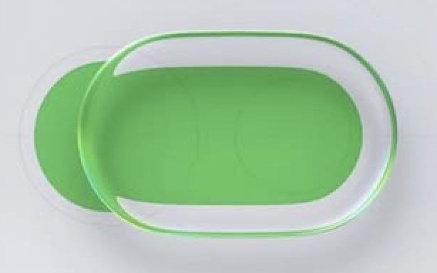

<!doctype html><html lang="zh-CN"><meta charset="utf-8"><meta name="viewport" content="width=device-width,initial-scale=1"><title>Liquid glass</title>
<style>
*{box-sizing:border-box}body{margin:0;background:#eee;color:#181818;font:14px system-ui}header{padding:32px 40px 22px;display:flex;justify-content:space-between;align-items:center}h1{font-size:26px;margin:6px 0}p{color:#666;line-height:1.6;margin:6px 0}small{letter-spacing:2px;color:#777}button{font:inherit;cursor:pointer;border:0;border-radius:999px;padding:10px 18px;background:#ddd;color:inherit}button:hover,button:focus-visible{background:#ccc}button[aria-pressed=true]{background:#181818;color:white}.actions{display:flex;gap:8px}.cards{display:grid;grid-template-columns:1fr 1fr;gap:24px;padding:0 40px 32px}.card{background:#f8f8f8;border-radius:24px;overflow:hidden}.info{padding:20px 24px;display:flex;align-items:start;justify-content:space-between}.info h2{font-size:18px;margin:0 0 6px}.scene{height:300px;position:relative;overflow:hidden;background:linear-gradient(135deg,#e9e9ec,#f6f6f7)}.back{position:absolute;inset:0;transition:transform .8s}.grid{position:absolute;left:36px;top:35px;width:240px;height:230px;background:repeating-linear-gradient(0deg,transparent 0 17px,#fff9 17px 21px),repeating-linear-gradient(90deg,#0785ff 0 17px,#fff9 17px 21px);border-radius:12px}.stripe{position:absolute;left:280px;top:40px;height:230px;width:50px;background:#f5a348;transform:rotate(24deg)}.back span{position:absolute;top:210px;left:40px;font:600 28px ui-monospace;color:#181818}.glass{position:absolute;left:8%;top:95px;width:84%;height:74px;border-radius:37px;display:flex;align-items:center;justify-content:space-around;isolation:isolate;box-shadow:0 8px 16px -9px #0005,0 22px 32px -24px #0004;cursor:grab;touch-action:none}.glass:active{cursor:grabbing}.shine{position:absolute;inset:0;pointer-events:none;border-radius:inherit;z-index:0}.glass b{position:relative;z-index:1;font:500 19px ui-monospace;pointer-events:none}.glass b:first-of-type,.glass b:nth-last-of-type(2){font-size:30px}.card.selected .info{background:#e1e1e1}.night{background:#151517;color:#eee}.night .card{background:#242426}.night .scene{background:linear-gradient(130deg,#33343a,#17171b)}.night p{color:#aaa}.night button{background:#39393d;color:#eee}.night button[aria-pressed=true]{background:#eee;color:#111}.night .back span{color:white}.night .card.selected .info{background:#414145}footer{padding:0 40px 32px;color:#777;font-size:12px}a{color:inherit} @media(max-width:850px){.cards{grid-template-columns:1fr;padding:0 16px 24px}header{padding:24px 16px;display:block}.actions{margin-top:16px}.scene{height:270px}}
.glass.original{backdrop-filter:none!important;-webkit-backdrop-filter:none!important;box-shadow:none}.glass.original .shine{visibility:hidden}details label{margin-top:14px}summary{cursor:pointer;color:#777;font-size:12px}</style>
<header><div><small>MATERIAL STUDY · SVG / CPU</small><h1>Liquid glass</h1><p>拖动玻璃经过蓝色 grid，比较中央稳定度、边缘弯折与光感。</p></div><div class="actions"><button id="theme" title="切换浅色与深色场景">切换深色</button><button id="background" title="切换蓝条与 grid 背景">切换蓝条</button><button id="move" title="移动背景检验实时折射">移动背景</button></div></header><main class="cards"></main><footer>非 WebGL · 本地生成 SDF 法线、Snell 位移与高光图 · Chromium 显示折射；其他浏览器使用磨砂降级。<br>技术参考：<a href="https://github.com/rukkiecodes/liquid-glass">rukkiecodes</a> / <a href="https://github.com/sohumsuthar/liquid-glass">sohumsuthar</a>。本页为独立比较实现，尚未替换正式页面。</footer>
<style>
[data-variant=B]{grid-column:1 / -1;order:-1}
[data-variant=B] .scene{height:340px;background:radial-gradient(ellipse at 35% 30%,#e7e8eb,#d6d8de)}
[data-variant=B] .glass{box-shadow:0 14px 18px -13px #343a4440,0 25px 35px -22px #343a4428}
[data-variant=B].reference .glass{width:300px;height:190px;border-radius:95px;left:calc(50% - 125px);top:64px}
[data-variant=B].reference .glass b{visibility:hidden}
[data-variant=B].reference .grid{width:300px;height:128px;left:calc(50% - 162px);top:95px;border-radius:90px;background:radial-gradient(ellipse at 55% 80%,#53bd53,#34a63c);box-shadow:inset 0 1px 3px #fff3}
[data-variant=B].reference .stripe,[data-variant=B].reference .back span{display:none}
[data-variant=B] .tuning{grid-template-columns:repeat(4,1fr)}
.comparison{display:grid;grid-template-columns:1fr 1fr;background:#dedfe4}.comparison figure{margin:0;display:flex;flex-direction:column;align-items:center;justify-content:center}.comparison img{width:min(100%,420px);height:auto;mix-blend-mode:normal}.comparison figcaption,.live-caption{font-size:11px;color:#777;position:absolute;bottom:16px}.comparison figure{position:relative}.live-caption{left:24px}.night .comparison{background:#2a2d32}.comparison figure{min-height:340px}@media(max-width:700px){.comparison{grid-template-columns:1fr}}.b-modes{display:flex;gap:6px;padding:0 24px 16px;background:#f8f8f8}.b-modes button{font-size:12px}
.night [data-variant=B] .scene{background:radial-gradient(ellipse at 35% 30%,#373a40,#1c1e24)}
.night .b-modes{background:#242426}
@media(max-width:850px){[data-variant=B] .tuning{grid-template-columns:1fr 1fr}}
.bar-scene .grid{top:117px;left:0;width:50%;height:30px;background:#168cf0;border-radius:0 99px 99px 0}.bar-scene .stripe{display:none}.bar-scene .back span{top:225px;font-size:18px;color:#888}.tuning{padding:16px 24px 20px;display:grid;grid-template-columns:1fr 1fr;gap:14px 22px}.tuning label{display:grid;gap:7px;font-size:12px}.tuning label span{display:flex;justify-content:space-between}.tuning output{font-variant-numeric:tabular-nums;color:#777}.tuning input{width:100%;accent-color:#777;margin:0;cursor:pointer}.tuning button{grid-column:2;justify-self:end;font-size:12px;padding:7px 14px}.night .tuning output{color:#bbb}.tuning input:focus-visible{outline:2px solid #888;outline-offset:3px}</style><style>
/* Match Pass Error Cases light graph stage across neutral surfaces. */
body:not(.night){--light-surface:#f3f3f3;background:var(--light-surface)}
body:not(.night) :is(header,.cards,.card,.info,.scene,.comparison,.comparison figure,.b-modes,.tuning,footer){background:var(--light-surface)}
body.night{--dark-surface:#131313;background:var(--dark-surface)}
body.night :is(header,.cards,.card,.info,.scene,.comparison,.comparison figure,.b-modes,.tuning,footer){background:var(--dark-surface)}
</style><script src="material-b.js"></script><script>
const variants=[{id:'A',name:'薄切玻璃',desc:'圆弧肩部 · 清晰亮边',bezel:18,depth:18,shine:.65,power:50},{id:'B',name:'厚板玻璃',desc:'宽肩倒角 · 厚板折射',bezel:36,depth:28,shine:1.5,power:28},{id:'D',name:'晶透亮边',desc:'宽曲面 · Fresnel 亮边',bezel:31,depth:32,shine:1.1,power:65,fresnel:true}];
const main=document.querySelector('main');variants.forEach(v=>{let c=document.createElement('section');c.className='card';c.dataset.variant=v.id;c.innerHTML=`<div class="info"><div><h2>${v.id} / ${v.name}</h2><p>${v.desc}</p></div><button title="选择 ${v.id} ${v.name}" aria-pressed="false">选 ${v.id}</button></div><div class="scene"><div class="back"><div class="grid"></div><div class="stripe"></div><span>UB 74304 →</span></div><div class="glass" aria-label="可拖动的${v.name}"><div class="shine"></div><b>−</b><b>ZOOM</b><b>＋</b><b>⛶</b><b>↶</b></div></div>`;main.append(c);c.querySelector('button').onclick=e=>{document.querySelectorAll('.info button').forEach(b=>b.setAttribute('aria-pressed','false'));document.querySelectorAll('.card').forEach(x=>x.classList.remove('selected'));e.target.setAttribute('aria-pressed','true');c.classList.add('selected');location.hash=v.id};const g=c.querySelector('.glass');addTuning(c,g,v);if(v.id==='B')addBScene(c,g,v);new ResizeObserver(()=>render(g,v)).observe(g);let start;g.onpointerdown=e=>{start=[e.clientX,e.clientY,g.offsetLeft,g.offsetTop];g.setPointerCapture(e.pointerId)};g.onpointermove=e=>{if(!start)return;g.style.left=Math.max(-g.offsetWidth/2,Math.min(g.parentElement.clientWidth-g.offsetWidth/2,start[2]+e.clientX-start[0]))+'px';g.style.top=Math.max(0,Math.min(226,start[3]+e.clientY-start[1]))+'px'};g.onpointerup=g.onpointercancel=()=>start=null});
function addBScene(card,glass,v){
 const modes=document.createElement('div');modes.className='b-modes';
 for(const [key,name] of [['reference','参考比例 · 绿色'],['toolbar','工具栏 · 原背景']]){
  const button=document.createElement('button');button.textContent=name;button.title='B '+name;button.setAttribute('aria-pressed',String(key==='toolbar'));
  button.onclick=()=>{card.classList.toggle('reference',key==='reference');glass.style.left='';glass.style.top='';modes.querySelectorAll('button').forEach(b=>b.setAttribute('aria-pressed',String(b===button)));render(glass,v)};modes.append(button);
 }
 card.insertBefore(modes,card.querySelector('.scene'));
 const scene=card.querySelector('.scene'),comparison=document.createElement('div');comparison.className='comparison';
 const ref=document.createElement('figure');ref.innerHTML='<figcaption>Apple · 你的参考</figcaption>';
 scene.before(comparison);comparison.append(ref,scene);
 const caption=document.createElement('span');caption.className='live-caption';caption.textContent='B · 实时 SVG 玻璃';scene.append(caption);
}
function addTuning(card,glass,v){
 v.ior=1.5;v.blur=0;v.strength=60;v.rim=v.id==='B'?95:85;v.rimWidth=v.id==='B'?2.75:3;
 const defaults={...v};
 const specs=[['strength','折射强度',0,100,1,''],['depth','玻璃厚度',0,48,1,'px'],['bezel','折射覆盖宽度',2,36,1,'px'],['shine','高光强度',0,1.5,.05,''],['power','高光聚焦',5,100,1,''],['blur','磨砂程度',0,3,.1,'px'],['rim','侧壁取色',0,100,1,''],['rimWidth','侧壁宽度',1,6,.25,'px'],['ior','折射率',1,1.8,.01,'']];
 if(v.id==='B'){
  const order=['strength','bezel','shine','power','depth','blur','rim','rimWidth','ior'];
  specs.sort((a,b)=>order.indexOf(a[0])-order.indexOf(b[0]));
  specs.find(spec=>spec[0]==='power')[2]=0;
 }
 const panel=document.createElement('div');panel.className='tuning';
 const advanced=document.createElement('details');advanced.style.gridColumn='1 / -1';const summary=document.createElement('summary');summary.textContent='高级 · 物理折射率';summary.title='展开物理折射率调节，默认 1.50';advanced.append(summary);
 const syncs=[];
 for(const [key,name,min,max,step,unit] of specs){const label=document.createElement('label'),caption=document.createElement('span'),out=document.createElement('output'),input=document.createElement('input');caption.append(name,out);input.type='range';input.min=String(min);input.max=String(max);input.step=String(step);input.title=v.id+' '+name;input.setAttribute('aria-label',v.id+' '+name);label.append(caption,input);const sync=()=>{input.value=String(v[key]);out.textContent=Number(v[key]).toFixed(step<1?(step===.1?1:2):0)+unit};syncs.push(sync);sync();input.oninput=()=>{v[key]=Number(input.value);sync();schedule()};(key==='ior'?advanced:panel).append(label)}
 panel.append(advanced);
 let pending=false;function schedule(){if(pending)return;pending=true;requestAnimationFrame(()=>{pending=false;render(glass,v)})}
 const compare=document.createElement('button');compare.textContent='查看原始背景';compare.title='隐藏玻璃材质，与原始背景对比';compare.setAttribute('aria-pressed','false');compare.style.gridColumn='1';compare.onclick=()=>{const on=glass.classList.toggle('original');compare.setAttribute('aria-pressed',String(on));compare.textContent=on?'返回玻璃效果':'查看原始背景'};
 const reset=document.createElement('button');reset.textContent='恢复本版默认';reset.title='恢复 '+v.id+' 的全部材质参数';reset.onclick=()=>{Object.assign(v,defaults);syncs.forEach(sync=>sync());schedule()};panel.append(compare,reset);card.append(panel);
}
// Screen-space sidewall approximation: compress an inward background band into
// a narrow contour. It samples the live backdrop; no fixed semantic tint.
function sidewallMaps(w,h,r,v){
 const canvas=document.createElement('canvas');canvas.width=w;canvas.height=h;
 const ctx=canvas.getContext('2d'),map=ctx.createImageData(w,h),mask=ctx.createImageData(w,h);
 for(let y=0;y<h;y++)for(let x=0;x<w;x++){
  const i=(y*w+x)*4,d=-sdf(x+.5,y+.5,w,h,r),e=.25;
  let gx=sdf(x+.5+e,y+.5,w,h,r)-sdf(x+.5-e,y+.5,w,h,r),gy=sdf(x+.5,y+.5+e,w,h,r)-sdf(x+.5,y+.5-e,w,h,r);
  const len=Math.hypot(gx,gy)||1;gx/=len;gy/=len;
  const t=Math.max(0,Math.min(1,d/v.rimWidth));
  // Across 3px of sidewall, sample a broad strip toward the flat interior.
  const reach=Math.min(h*.48,v.depth*.5+16)*(1-.2*t);
  map.data.set([Math.round(127.5-gx*reach/128*255),Math.round(127.5-gy*reach/128*255),128,255],i);
  const aa=Math.max(0,Math.min(1,d+.5))*Math.max(0,Math.min(1,v.rimWidth-d+.5));
  const alpha=aa*(v.rim/100)*(.75+.25*Math.sin(t*Math.PI));
  mask.data.set([255,255,255,Math.round(alpha*255)],i);
 }
 ctx.putImageData(map,0,0);const url=canvas.toDataURL();ctx.putImageData(mask,0,0);
 return {map:url,mask:canvas.toDataURL()};
}
function sdf(x,y,w,h,r){let qx=Math.abs(x-w/2)-(w/2-r),qy=Math.abs(y-h/2)-(h/2-r);return Math.hypot(Math.max(qx,0),Math.max(qy,0))+Math.min(Math.max(qx,qy),0)-r}
function render(el,v){if(v.id==='B'){renderB(el,v);return;}let w=Math.round(el.clientWidth),h=74,r=37,canvas=document.createElement('canvas');canvas.width=w;canvas.height=h;let ctx=canvas.getContext('2d'),map=ctx.createImageData(w,h),hi=ctx.createImageData(w,h),scale=Math.max(128,v.depth*4);for(let y=0;y<h;y++)for(let x=0;x<w;x++){let i=(y*w+x)*4,d=-sdf(x+.5,y+.5,w,h,r),dx=0,dy=0,light=0;if(d>=0&&d<v.bezel){let t=d/v.bezel,e=.1,gx=(sdf(x+e,y,w,h,r)-sdf(x-e,y,w,h,r))/(2*e),gy=(sdf(x,y+e,w,h,r)-sdf(x,y-e,w,h,r))/(2*e),len=Math.hypot(gx,gy)||1;gx/=len;gy/=len;let slope=v.smooth?6*t*(1-t):(Math.pow(1-t,3)/Math.pow(Math.max(.0001,1-Math.pow(1-t,4)),.75)),nz=1/Math.sqrt(1+slope*slope),nx=gx*slope*nz,ny=gy*slope*nz,eta=1/v.ior,f=eta*nz-Math.sqrt(1-eta*eta*(1-nz*nz)),tz=-eta+f*nz;let height=v.depth*(.25+.75*Math.pow(1-Math.pow(1-t,4),.25));let shift=height/Math.max(.1,-tz),fr=.04+.96*(1-nz)**5,fade=v.fresnel?1-fr:1;dx=f*nx*shift*fade;dy=f*ny*shift*fade;let nd=Math.max(0,nx*(-.34)+ny*(-.48)+nz*.81);light=Math.pow(nd,v.power)*v.shine*Math.min(1,slope*3);light+=fr*(v.fresnel?.46:.12);light*=Math.min(1,d*2)}map.data.set([Math.round(128+dx/scale*255),Math.round(128+dy/scale*255),128,255],i);hi.data.set([255,255,255,Math.round(Math.min(.95,light)*255)],i)}ctx.putImageData(map,0,0);let url=canvas.toDataURL();ctx.putImageData(hi,0,0);el.querySelector('.shine').style.backgroundImage=`url(${canvas.toDataURL()})`;const side=sidewallMaps(w,h,r,v);let id='glass-'+v.id,svg=document.getElementById(id+'-svg');if(!svg){svg=document.createElementNS('http://www.w3.org/2000/svg','svg');svg.id=id+'-svg';svg.style.cssText='position:absolute;width:0;height:0;pointer-events:none';document.body.append(svg)}svg.innerHTML=`<filter id="${id}" x="-30%" y="-100%" width="160%" height="300%" color-interpolation-filters="sRGB"><feImage href="${url}" x="0" y="0" width="${w}" height="${h}" result="map"/><feDisplacementMap in="SourceGraphic" in2="map" scale="${scale*v.strength/40}" xChannelSelector="R" yChannelSelector="G"/><feGaussianBlur stdDeviation="${v.blur||0}" result="face"/>
<feImage href="${side.map}" x="0" y="0" width="${w}" height="${h}" result="sideMap"/>
<feDisplacementMap in="SourceGraphic" in2="sideMap" scale="128" xChannelSelector="R" yChannelSelector="G" result="sideColor"/>
<feColorMatrix in="sideColor" type="saturate" values="1.2" result="sideRich"/>
<feImage href="${side.mask}" x="0" y="0" width="${w}" height="${h}" result="sideMask"/>
<feComposite in="sideRich" in2="sideMask" operator="in" result="rimColor"/>
<feComposite in="rimColor" in2="face" operator="over"/></filter>`;let filter=/Chrome/.test(navigator.userAgent)?`url(#${id})`:'blur(2px)';el.style.backdropFilter=filter;el.style.webkitBackdropFilter=filter}
document.querySelector('#theme').onclick=e=>{let dark=document.body.classList.toggle('night');e.target.textContent=dark?'切换浅色':'切换深色'};let moved=false;document.querySelector('#move').onclick=()=>{moved=!moved;document.querySelectorAll('.back').forEach(b=>b.style.transform=moved?'translateX(120px)':'none')};
document.querySelector('#background').onclick=e=>{const bar=document.body.classList.toggle('bar-scene');e.target.textContent=bar?'切换 grid':'切换蓝条'};</script></html>
